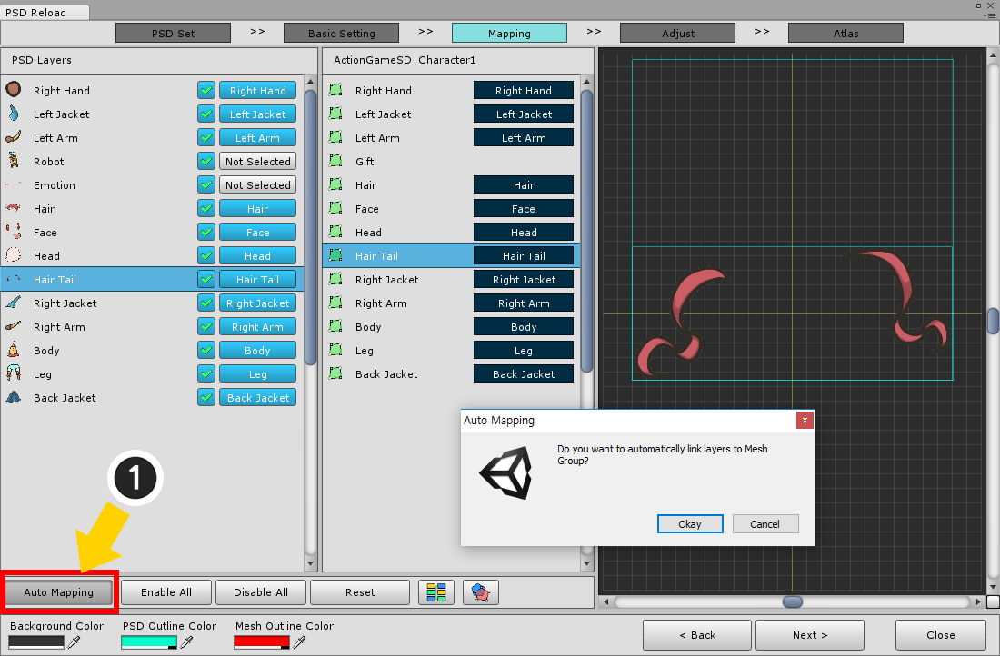

AnyPortrait > マニュアル > PSDファイルの再インポート
PSDファイルの再インポート
1.4.2
時にはPSDファイルでキャラクターを作成し、後で元の画像を修正しようとします。
以前は、PSDファイルの画像を修正して、変更された画像を、既に作成されたキャラクターに適用することができる方法がありませんでした。
(作成した Atlasを編集するソリューションのみです。)
バージョン1.0.6で追加された機能を使用すると、オリジナルを変更してAnyPortraitにインポートすることができます。
ただし、プロセスは非常に複雑なので、次のガイドを必ずお読みください。
必要に応じて、事前に「バックアップ」または「コピー」を作成することをお勧めします。
このページでは、PSDファイルを再度インポートする方法について説明します。

このページで紹介されている可愛いキャラクターのイラストです。
画像の最初のバージョンの少女を見ると、頭に角がなく、少女は紫のキューブを持っています。
画像の修正版には、少女の頭に角があり、紫の立方体の代わりにロボットの人形がつけられ、感情的な効果が加えられています。
PSDファイルが変更された場合は、次の場合には別の方法で処理する必要があります。
1. レイヤーを変更した場合 : レイヤーの画像サイズと位置が変更されているため、位置を修正する必要があります。
2. レイヤーが削除された場合 : 再オープンするPSDからレイヤーが削除されます。 新しい 「Atlas」を作成するときには含まれていません。メッシュグループとメッシュグループは、以前の 「Atlas」を参照して維持されます。 自動的に削除されたり、このレイヤーで参照される 「Atlas「」も削除されません。
3. レイヤーが追加されたとき : 新しいメッシュが作成されます。 ただし、新たに追加されたメッシュがメッシュグループの最上部に追加されます。

(1) 「Import PSD File」ボタンをクリックします。
(2) 最初のページの「Reload PSD File」ボタンを押します。
PSDファイルを再インポートするための画面のデフォルト設定。
1. 手順5のインポートプロセス : 現在の手順が画面の上部に表示されます。 各ステップで実行するタスクがあります。
2. Background Color, Outline Color of PSD and Mesh : プレビュー画面で、背景色、PSDの画像輪郭色、メッシュの輪郭色を設定することができます。
3. Next, Prev, Close, Completeボタン : 各ステップを移動または終了します。
PSDファイルで作成されたキャラクターがいる場合、「PSDセット(PSD Set)」が追加されます。
（そうでない場合は、このページの次の項目を参照してください。）
(1) 「PSDセット」を選択します。
(2) のPSDファイルを変更するには、「Change」ボタンを押して、インポートPSDファイルを選択します。
(3) 「前回のBake設定」と「インポートするPSDファイルの属性」の概要を示します。
(4) 「Next」ボタンを押して次のステップに進みます。
上記の処理が成功しなかった場合、「Next」ボタンは無効になります。
2番目のページで、「PSDを適用するメッシュグループとイメージ」、「PSDファイルとメッシュグループのサイズと位置」を選択して調整する必要があります。
それらのほとんどはデフォルトで自動的に設定されますが、プレビュー画面で手動で修正する必要があります。
この画面は次のように構成されています。
1. Target Mesh Group : 適用するメッシュグループ。
2. Baked Images : 「Atlas」が上書きまたは参照する画像。 ターゲットメッシュグループによって参照されるイメージを追加できます。
3. Bake Scale : PSDがメッシュグループに適用するサイズのパーセンテージ。
4. Rendering Type : プレビュー画面に表示するオブジェクトを設定することができます。
5. Offset : PSDとメッシュグループの位置の差を修正することができます。
6. プレビュー画面 : 選択したオブジェクトを出力します。 この画面を見ながらサイズと位置を修正してください。 AnyPortraitのメインエディタと同じ方法で、マウスとキーボードを使用して画面を移動またはズームすることができます。
レンダリングタイプ（Rendering Type）は、それぞれの次のレンダリングとレンダリング方法を決定します。
1. 画像 : 左のBaked Imageリストから選択した画像をプレビューすることができます。
2. メッシュグループ : メッシュグループ出力するかどうかを決定します。
3. PSD画像 : PSD画像出力方法を決定します。「目に見えない」、「アウトラインのみ」と「表示」の3つのモードを切り替えます。
画像を表示するには、(1) 画像を選択し、(2) 画像ボタンのみをオンにし、残りの画像をオフにします。
これは最も重要なステップの1つです。
プレビュー画面では、(1) メッシュグループとPSDの画像が正確に重なるように、「オフセット(Offset)」の値を変更します。
位置の値を直接入力することができます。 右のボタンを使用して、XとYの値を増減できます。
PSDファイルのキャンバスサイズが変更された場合、定数の位置補正値と正確に重複しないことがあります。
オフセット値には、整数でない実数を含めることができます。

「レンダリングタイプ(Rendering Type)」を変更することで、画像が正確に重なるかどうかを確認できます。
慎重に確認したら、「Next」ボタンを押して次のステップに進みます。

3番目のステップでは、「どのメッシュとメッシュグループにPSDファイルのレイヤーを適用するか」を設定する必要があります。
PSDファイルのすべてのレイヤーが表示され、右側には選択したメッシュグループのサブメッシュとサブメッシュグループが表示されます。
この画面は次のように構成されています。
1. PSD Layers : PSDファイルのレイヤー。 サムネイルが表示されるので、簡単に確認できます。 Bakeするか、どのオブジェクトを上書きするかを設定できます。
2. 適用されるオブジェクト : ターゲットメッシュグループの子メッシュおよびメッシュグループ。 上書きするように設定されている場合、関連するPSDレイヤー名が一緒に表示されます。
3. Auto Mapping : 名前とレイヤの順序に基づいて自動的に接続します。 あなたは使用後に確認する必要があります。
4. Enable All / Disable All : すべてのレイヤーでBakeをオンまたはオフにします。 非アクティブなレイヤーも接続情報を失います。
5. Reset : Bakeかどうかをそのまま置いたままの接続情報をすべて初期化します。
6. 接続状態を色で表示 : 両面の接続状況を色で簡単に表示します。
7. アウトラインプレビュー : この機能をオンにするプレビュー画面でアウトラインが表示されます。
8. プレビュー画面 : 選択したPSD層の画像に関連付けられたメッシュを出力します。 グループタイプのPSDレイヤーが選択されている場合、何も出力されません。

「接続状態を色で表示」ボタンをクリックすると、リストの背景色が異なります。
リンクされたPSDレイヤーとオブジェクトは、同じ背景色で表示されます。
「アウトラインプレビュー」ボタンがオンの状態では、プレビュー画面でPSDレイヤーとメッシュが半透明色の輪郭で表示されます。
色は画面の左下に変更することができます。
(この段階では、位置とサイズが一致しないことがあります。)
これは、PSDレイヤをターゲットオブジェクトに関連付ける方法です。
(1) PSDレイヤーの 「接続」ボタンを押します。
(2) 接続するオブジェクトの「選択」ボタンを押します。

(1) Enable / Disableボタンを押して、PSDレイヤーが「Bake」されないようにすることができます。
このボタンをもう一度押すと、「Bake」が有効になります。
このボタンを押すと、接続が初期化されるので、接続情報を初期化するのに便利です。

(1) 「Auto Mapping」ボタンを押すと、オブジェクトが「有効になっており、接続されていないすべてのPSDのレイヤー」に自動的に接続されます。
この関数は、オブジェクトの名前をレイヤー名と比較して、二つ両方を接続するため間違っ接続することができます。
接続を確認してください。

4番目のステップでは、すべてのPSDレイヤーとメッシュの「位置とサイズ」を修正する必要があります。
この画面は次のように構成されています。
1. PSD Layers : これらは、 BakeになるPSDレイヤーです。
2. Rendering / Order : プレビュー画面でレンダリング方法と出力順序を変更できます。
3. Position Offset : これらは、適用されるメッシュのPSDレイヤーの位置を修正するツールです。
4. Prev. Atlas Scale : 以前に作成した「Atlas」のサイズを入力するためのツール。 この値はすべてのレイヤーで同じです。
5. 前/次のレイヤーを選択ボタン : 前の次のレイヤーを選択します。
6. プレビュー画面 : 選択したメッシュとPSDレイヤーを出力します。 出力方法に関係なく、メッシュの形状を出力します。

プレビュー画面からの出力方法は次のとおりです。
1. メッシュのレンダリング方法 : メッシュのレンダリング方法として「見えない」や「アウトラインのみを表示する」または「すべてを表示する」のいずれかを選択します。
2. レンダリングの順序の切り替え : メッシュを先に表示するか、またはPSDレイヤー画像を先に表示するかを決定します。
3. PSD画像のレンダリング方法 : PSDレイヤー画像のレンダリング方法として「見えない」や「アウトラインのみを表示する」または「すべてを表示する」のいずれかを選択します。
位置とサイズを調整しながら簡単に確認することができます。
これが最も重要なステップです。
PSDレイヤーを選択し、その位置を修正します。
(サイズはデフォルトでは適切に設定されていますが、修正が必要な場合はこのページの下部にある情報を参照してください。)
(1) 「Position Offset」のツールを使用して変更します。 実数値を入力することができます。
場所がプレビュー画面と正確に重なっていることを確認してください。
終了したら、次のレイヤーを選択します。 (2) 「Next」ボタンを選択すると作業効率が向上します。
すべてのレイヤーの位置を確認し、修正します。
プレビューのイメージフィルタを変更
1.4.2
PSDのレイヤー画像とメッシュの画像の位置を正確に一致させるには、ピクセルが滑らかで区別することが困難です。
画像がスムーズに見えるようにするフィルタがデフォルトで適用されているためです。
このフィルタをオフにしてピクセル単位で正確に確認して位置を補正できます。

上記のボタンは、画像のフィルタをオフにしてピクセルが鮮明に見えるようにする機能です。
これはプレビューでのみ動作し、実際のテクスチャアセットには影響しません。

(1) この機能をオンにしていない状態で位置を補正する画面です。
(2) 画面を拡大すると画像がスムーズに出力され、2枚の画像が正確に重なっていることを目視で確認することは困難です。

(1) ピクセルが鮮明に見えるようにボタンを押して機能を有効にします。
(2) 画像のピクセルがはっきりと見えるので、位置を補正するのは簡単です。

新たに追加された画像のレイヤーは、位置補正やサイズ補正は必要ありません。

最後のステップは Atlasを作成して適用することです。
この機能は、PSDファイルを読み込む基本機能と同じです。
(メッシュグループのサイズを設定する機能は除きます。)
すでに「Bake」された状態であるため、基本的に設定が以前の「Atlas Bake」の設定値と同じです。
(1) 「Atlas」テクスチャアセットの保存する名前とパスを設定します。
(2) 「Atlas」のサイズ、数、マージン、ボーダー補正の設定を確認し、必要に応じて変更してください。
(3) 「Bake」ボタンを押して「Atlas」を作成します。
(4) AnyPortraitエディタに適用するには、 「Complete」ボタンを押します

メインエディタに戻ると、更新されたPSDイメージが適用されていることがわかります。
既存のオブジェクトが残っていたり、新しいオブジェクトが追加されたことを見ることができ、頂点を修正する必要があるメッシュを確認することができます。
レイヤーイメージが変更されたメッシュ


イメージが変わると、メッシュを変更する必要があります。
メッシュを選択し、頂点を追加または削除して新しいイメージを修正します。
注意。
モディファイアまたはアニメーションがメッシュに適用されている場合は、既存の頂点を削除しないことをお勧めします。
新しい頂点を追加したり、いくつかの頂点だけを削除したりすると、残りの頂点のモディファイア情報が保持されます。
レイヤーを削除したメッシュ
新しくインポートされたPSDファイルにレイヤーが存在しなくても、既存のメッシュは削除されません。
ただし、このメッシュは新しいAtlasを共有しないため、「古いAtlas」を引き続き使用します。
この場合、「古いAtlas」は削除されずにそのまま使用されるため、最適化の問題が発生する可能性があります。
詳細は以下を参照してください。
レイヤーが追加されたメッシュ

新しく追加されたメッシュはデフォルトで正方形のメッシュとして作成されます。
PSDファイルを最初に読み込んだときのように、頂点を追加してメッシュを修正します。

上記の操作を完了すると、変更されたPSDイラストのキャラクターを見ることができます。
「Atlas」テクスチャアセットの保存方法
「Atlas」画像が「テクスチャアセット(Texture Asset)」として保存されているフォルダを見ると、上記のように保存されていることがわかります。
1. 「Preserved」フォルダ : 既存のAtlas画像からまだ使用されている画像が保存されます。
2. 「Unused」フォルダ : 既存の Atlasイメージから上書きされた削除済みイメージを保存します。
3. 新しく作成された「Atlas」テクスチャアセット : PSDの再インポートによって新たに作成されたAtlasテクスチャアセットが保存されます。
「Preserved」フォルダは、既存のAtlasイメージの中でまだ使用されているテクスチャ資産が格納されているフォルダです。
Bake処理の後、テクスチャアセット名が若干変更されることがあります。
PSDファイルはすでに存在しますが、新しいPSDファイルに削除されたイメージレイヤのメッシュが含まれている場合、メッシュは引き続き既存の Atlasを使用する必要があります。
この場合、Atlasイメージは「Preserved」フォルダに移動され、保存されます。
このフォルダはデフォルトでは削除しないでくださいが、このフォルダ内のテクスチャアセットは最適化には役立ちません。
メッシュとテクスチャが使用されなくなった場合、AnyPortraitエディタからメッシュとイメージを削除し、このフォルダのテクスチャを削除します。

「Unused」フォルダは、古いAtlasイメージがAnyPortraitから上書きされ、その資産が保存されるフォルダです。
Bakeの処理後、各テクスチャアセットの名前にテキスト「(Unused)」が追加されます。
Atlasのすべてのメッシュが新しいPSDファイルのレイヤーで更新されると、既存のAtlasは使用されなくなり、削除する必要があります。
AnyPortraitエディタでは、既存の Atlas情報は削除されますが、テクスチャアセットは削除されずに 「Unused」フォルダに移動されます。
これは、必要に応じて修復して再利用できるためです。
ただし、デフォルトでは、このフォルダ内のアセットは使用されないため、ユーザーが手動で確認および削除することをお勧めします。
手動でPSDセット情報を作成してインポートする
PSDファイルの再インポートは、AnyPortrait v1.0.6以降でサポートされている機能です。
悲しいことに、この機能で使用されているデータは、 「以前のバージョン」で作成されたキャラクターに保存されていないため、 「PSDセット」情報は生成されません。
ただし、独自の「PSDセット」情報を作成して、PSDファイルを再インポートすることができます。
やるべきことはたくさんありますが、あなたは下の順番でそれを行うことができます。
(これには、他の問題のためにすべての手動設定が含まれます。)

PSDの再インポートダイアログを開きます。
「PSDセット」の情報が保存されていない場合は、上記の画面のように情報が表示されません。
(1) 「Add New PSD Set」ボタンを押して、1つのPSDセットを作成します。

(2) 新しく作成したPSDセットを選択します。
（削除したい場合は、「Remove PSD Set」ボタンを押してください）。

(3) 「Change」ボタンを押してPSDファイルを選択します。
(4) 「Next」ボタンを押して次のステップに進みます。
ターゲットメッシュグループと画像が設定されていません。
メッシュグループがプレビュー画面に表示されず、「Next」ボタンが無効になっていることに注意してください。

(1) 「Change」ボタンを押します。
(2) PSD画像が適用されるメッシュグループを選択します。
(3) 「Select」ボタンを押します。

Atlas画像を登録してください。
(1) 「Add Image」ボタンを押し、(2) 画像を選択して追加します。
「Add Images Automatically」ボタンをクリックすると、メッシュグループで使用されるすべての画像が自動的に登録されます。

これは、メッシュグループと画像の両方が登録されている画面です。
今、位置だけでなく、サイズは適合しません。
上記の画面は、PSD画像よりもメッシュグループが小さくなっています。

(1) メッシュグループとPSD画像が同じサイズになるように「Bake Scale」の値を修正します。
サイズインクリメントツールを使用してすばやく変更できます。
プレビュー画面で正しいサイズ値を見つけて設定します。

(2) メッシュグループがPSD画像と重なるように、「Offset」の値を変更します。
(実数を入力できます。)
メッシュグループとPSDファイルの位置とサイズを較正したら、「Next」ボタンをクリックして次のステップに進みます。

第3のステップは、PSD層をメッシュグループ内のオブジェクトにマッピングすることである。
新しいPSDセットを作成したので、何も接続されていません。

(1) PSDレイヤーの「Not Selected」ボタンを押し、
(2) 対象オブジェクトの「Select」ボタンをクリックして接続します。
既に接続されている場合は、同じ方法で再接続できます。

レイヤーとターゲットが接続されると、上記の画面が表示されます。
また、プレビュー画面は、PSD画像レイヤーに関連付けられたメッシュをレンダリングします。
新しく追加されたレイヤーについては、未接続のままにしておきます。

インポートしたくないレイヤーがある場合は、「Enable/Disable」ボタンをクリックしてレイヤーを無効にします。
この機能には接続をクリアする機能がありますので、接続を切断したい場合は無効にしてから再度有効にしてください。

(1) 「Auto Mapping」機能は、有効になっているPSDレイヤーと接続されていないPSDレイヤーを自動的にオブジェクトに接続します。
名前とレイヤー順に接続して比較する機能であるため、正しく接続されていないことがあります。
この機能を使用した後は、すべて確認してください。

「接続状態を色で表示」ボタンをクリックすると、色がどのように接続されているかを簡単に確認できます。
接続が終了したら、「Next」ボタンを押して次のステップに進みます。

すべてのメッシュとPSDレイヤの位置とサイズを較正する必要があります。
新しいPSDセットを作成すると、位置とサイズに収まらないことになります。

(1) 「Prev。Atlas Scale」の値を変更してサイズを修正します。
プレビュー画面ではPSDレイヤーの相対サイズが変更されるため、メッシュのサイズが変更されたかのように表示されます。
この値はすべてのレイヤーで同じですので、一度だけ設定する必要があります。

(2) メッシュとPSD画像が正確に重なるように、「Position Offset」を変更します。
それらが正確に重なることが確認されたら、同じことをするために次のレイヤーを選択します。
(3) 「前/次レイヤの選択」ボタンを使用すると便利です。


すべてのレイヤーのメッシュと重なる位置を修正します。
新しく追加されたPSDレイヤーについて何もする必要はありません。
「Next」ボタンを押して次のステップに進みます。

最後のステップは AtlasとBakeを作成し、それをAnyPortraitに適用することです。
(1) テクスチャアセット(Texture Asset)の名前を設定し、保存パスを設定します。
既存のテクスチャアセットの名前と同じに設定することができます。(名前は自動的に変更されます。)
(2) 「Atlasのサイズ、数、マージン、ボーダー補正」を設定します。
(3) 「Bake」ボタンを押してAtlasを作成します。
(4) 「Complete」ボタンを押し、更新した情報をAnyPortraitに適用します。
PSDファイルの再インポート機能のトラブルシューティング方法
PSDファイルを再インポートするプロセスは非常に複雑で、各ステップは正確でなければなりません。
いくつかの操作が不正確な場合、出力が奇妙になることがあります。
発生する可能性のある問題とその解決方法を次に示します。
問題1 : メッシュグループの不正確な配置

これは、メッシュグループのデフォルト位置とPSDファイルが正確に重ならない場合に発生する問題です。

生成されたメッシュグループが間違った補正値によって移動したことがわかります。
解決方法
- 設定された位置補正値を覚えておき、補正値と同じサイズと反対の符号を使用してPSDファイルを再インポートします。
位置補正値がわからない場合は、補正値を変更してPSDファイルを再度インポートすることができます。
- これを修正するには、メッシュグループのデフォルトの場所を変更しますが、この場合は骨やモディファイアなどの情報が誤って解釈される可能性があります。
問題2 : メッシュおよびPSD画像レイヤーの位置補正が正しくない

メッシュおよびPSDの画像レイヤの位置補正は正しく処理されないことがあります。
特に、PSDファイルにレイヤーが多い場合、誤ってジョブが欠落する可能性があります。

メッシュの頂点が距離によって誤って移動し、それらが正しく配置されていないことがわかります。
解決方法

PSDファイルを再度インポートし直してください。
レイヤーの位置を修正するステップでは、プレビュー画面を見て、PSDイメージを移動してメッシュにオーバーラップさせます。
メッシュのテクスチャはすでに正しく出力されていないので、メッシュイメージに基づいて位置を修正しないでください。
この場合、位置はメッシュのワイヤフレームに対して変更する必要があります。
問題3 : Atlasの設定を変更する

サイズや余白を変更してAtlasを再作成する場合は、以前のAtlas設定と同じである必要はありません。
PSDファイルの再インポートダイアログで必要なAtlas設定に変更した後、Bakeすることができます。

解像度を大幅に変更しても問題なく適用できます。
問題4 : 新しいレイヤーを追加する
新しいレイヤーを追加してPSDファイルを再インポートすると、メッシュが一番上に表示されます。

(1) レイヤー並べ替え機能を使用して、オブジェクトのレンダリング順序を適切に変更します。